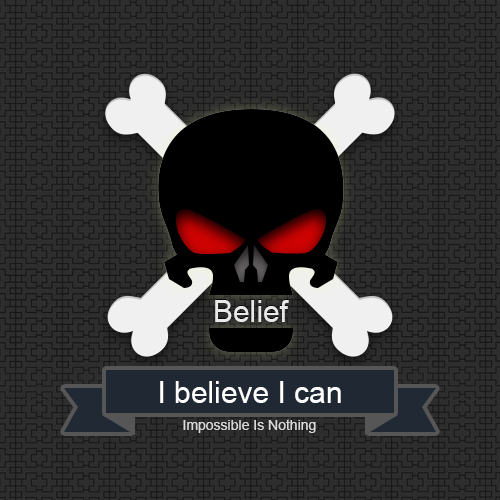

Kevin Chen
Android Platform Software Developer



E-Mail: dilukevin [at] gmail [dot] com
E-Mail: chj15826498119@126.com
WeChat:dilukevin
Skype:dilukevin
ABOUT ME
He is a conservative geek. After finishing school he has focused on it-technologies. No one seen him from this time. It can freely be said that he's in it always, except when he's asleep of course, but maybe even then, who knows?!
He enjoy learning and creating something new. He wants everything look great. He's a perfectionist with sense for details. He ensures the quality and high professionalism in everything he does. One word - programmer.
EXPERIENCE / PERSONAL SKILLS
- Experience with Android application development using Android SDK
- Good knowledge of Java
- Good knowledge of Object Oriented concepts and a strong passion for software development
- 3+ years of experience as an Android developer
- Understanding of mobile UX and design best practices
- Excellent attention to detail
- Self-motivated to explore new technologies, applications and environments
- Fully comfortable working in English
ANDROID SKILLS
- Excellent knowledge of the Android SDK
- Design Patterns
- UI customization
- Data storage
- SQLite
- Social network sharing
- Media
- Location & Maps
- Sensors Usage
- Widgets
- Performance optimization
- Unit Testing
KEY RESPONSIBILITIES
JRD Communication Technology (Shanghai) Ltd.
Position - Android Software Engineer- Development of mobile Android based apps
- On-going maintenance of existing projects
- Translating requirements and mock-ups into fully functioning features
- Providing estimates on development cycles
- Partnering with designers to help define and implement User Interface improvements
- Working with team members on server-side integration
- Working on project without detailed instructions
Wootion Technology (Chongqing) Ltd.
Position - Android Software Engineer- Development of mobile Android based apps
- maintenance of existing projects
- Outsourcing to ZTE (Chengdu) Ltd.
BACKGROUND
- Big fun of stackoverflow
- In love with Git and Android Studio.
- Bachelor's degree, Computer Science - Southwest University.